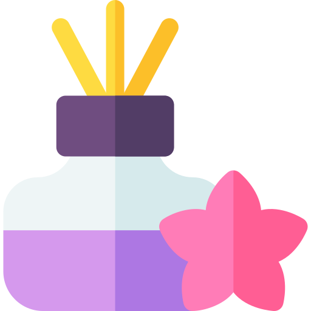
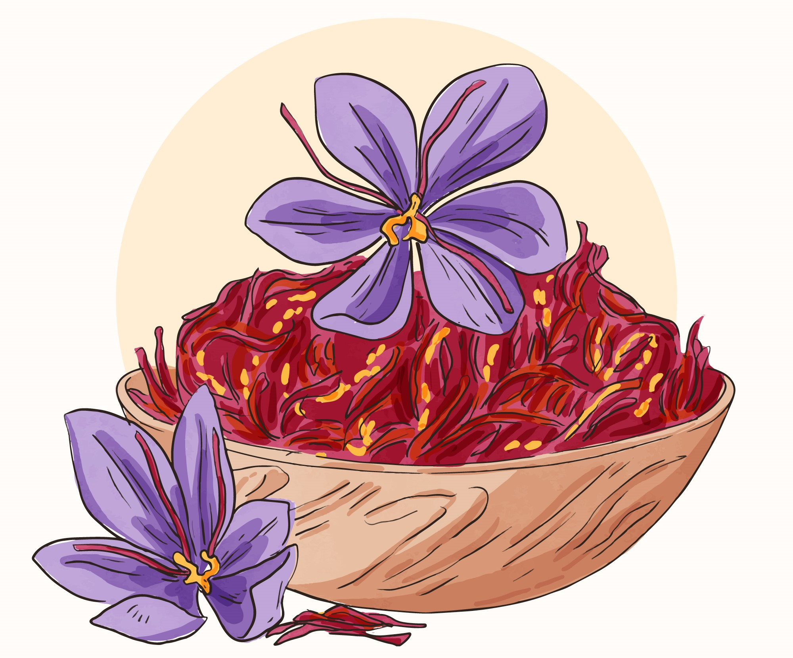

Saffron Quality Level
Deep Red
Evenly sized
Floral, earthy

Strong floral
HOW TO USE SAFFRON:
Add warm (not boiling) water to the saffron threads in a small dish. A few tablespoons of water is enough. You should see a golden hue begin to emerge in the water. Let the threads steep for 5-10 minutes, ideally up to 20 minutes.
After the saffron is finished steeping, you may add the saffron with the liquid to whatever you're cooking, such as kheer, rice, paella, or soup.
Another way to bring out the full flavor profile of saffron is to crush the threads with a mortar and pestle to a powder-like consistency. We suggest this for non-liquid recipes or baking, like when making saffron cookies or cake.
